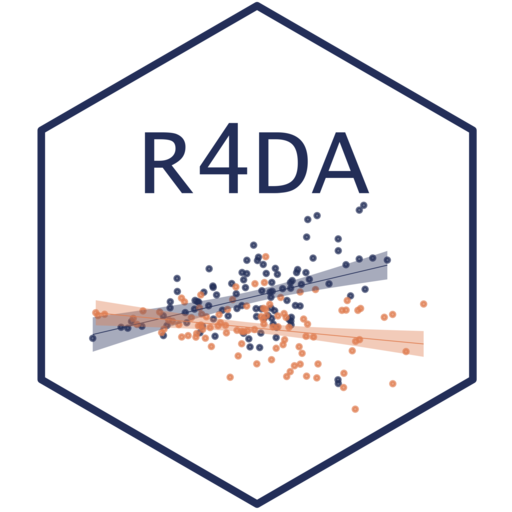

Describing Variables
R for Data Analysis
Session 2

Problems with Single Numbers
| Average Weight | |
|---|---|
| Cats | 40.14931 |
| Dogs | 40.07032 |


Variance Visually Explained

Population vs. Sample (\(N\) vs \(n−1\))

Population vs. Sample: Inherent Bias
- The sum of squares from \(\mu\) will always be greater than the \(\bar x\) sum of squares
- \(\bar x\)’s location already minimizes the total distance of all the observations to the center by the definition of sample mean
- A line at any other location would be a line that is not minimizing the distance for observations in our sample

Sample Dispersion: Standard Deviation
Standard Deviation \(s\): measure of the typical departure from the mean of a dataset (intuitive scale)
\[ s = \sqrt{\frac{\sum_{i=1}^{N}(x_i - \bar{x})^2} {N - 1}} = \sqrt{s^2} \]

Temperature

Causalties

Grammar of Graphics Logic
- Map data to aesthetics
- Aesthetic: visual property of the graph
- position
- shape
- color
- transparency

ggplot2 ∈ tidyverse

ggplot2 is tidyverse’s data visualization package
ggin ggplot2 stands for Grammar of Graphics
Installation:
For help with ggplot2, see ggplot2.tidyverse.org
Plotting with layers

Possible aesthetics
color discrete

color continuous

size

fill

shape

alpha

Example geoms
 |
geom_col() |
Bar charts |
geom_text() |
Text | |
 |
geom_point() |
Points |
 |
geom_boxplot() |
Boxplots |
 |
geom_sf() |
Maps |
Tidy means:
- Each variable has its own column
- Each observation has its own row
- Each value has its own cell

Same Data, Different Formats
Untidy Data

Tidy data 
Tidy is Long Data

Saving Your Plots: Bitmaps vs Vector

JPEG: Photographs
PNG/GIF: Images with limited colors

PDF: Anything vector based
SVG: Vectors online
Save your plots as PNG or SVG (Web) or PDF (Print)
